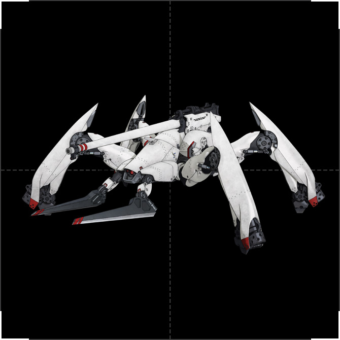
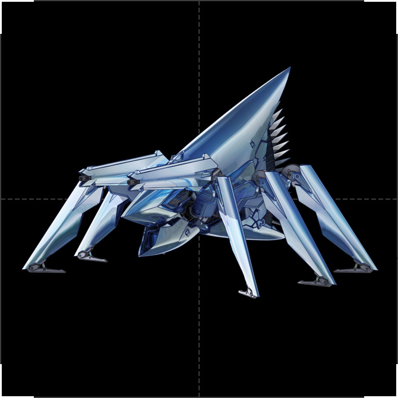
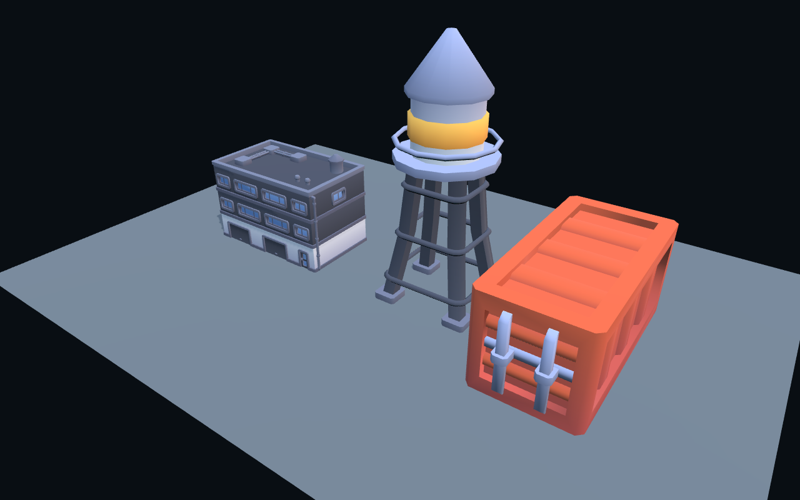

86 / TECHNICAL ART REVIEWS49–S52 · 2026.09.13 · 本地研究
先讓機體成立，
再讓光影說服人。
這輪檢查：模型、材質、光影與場景編排，哪一層才是目前完成度的瓶頸？下方是實際 Babylon 畫面與原作參考，沒有使用生成圖充當實機成果。
目前判斷：造型與動作先行。光影可以改善金屬層次，但同一套盒狀輪廓仍然是盒狀輪廓。這是美術診斷，尚未更新遊戲。
S51 / 現成 86 模型・可動結構實測
這是 Project-86 的本地素材驗證。保留原作模型網格和骨架，經 Blender 整理材質後匯出；關節測試只用來檢查權重，不是完成的步行動畫。
S52 動作版：原地播放慢行／快步、後座與收腿供檢查；戰場中的實際移動與跳高由遊戲控制。S52 戰場版本已被使用者否決美術完成度，暫停推廣試玩，先進行 S53 美術修正。Sketchfab 版本由玩家提供，作者 leoxx300；本檔沒有骨架或動作。
按下「載入 Ameise」開始。模型只用於本地驗證，尚未放進戰鬥版本。
拖曳旋轉，滾輪縮放。來源、作者、授權範圍與缺口。材質金屬度／粗糙度為本次暫定值，非原作者完整 PBR 還原。
01 / 同鏡頭光影對照
模型、地形、姿態與鏡頭完全相同。B 加入 HDR 環境反射，調整主補光與色調映射；未修改模型或增加泛光。這是組合對照，不能把差異全部歸因於 HDR。
A · 既有方向光、半球光與 PBR 材質。判讀：B 的表面與冷暖有所變化，主角仍缺少原作的機身曲面、裝甲厚度、關節轉折與副臂辨識。換引擎或加後製，不會自動填補這些缺口。
02 / 回到《86》的機型設計

XM2 女武神 · 原作參考
尖長足甲、外露關節、獨立前副臂與背部砲架。現有樣板標示 XM2，後續便應以這個結構驗收，不能用泛用四足外觀交付。
官方機型與規格
Ameise 斥候型 · 原作參考
高聳楔形感測部位、薄片足甲與雙小槍的辨識。現有通用中央砲管要修正；感測行為與移動應表達斥候身份。
官方軍團設定若先拿到可改造的 M1A4 模型，應明確做成破壞神的素材測試，依它自己的四足、副臂與砲架校對；不能改名就充當 XM2。動畫截圖與小說插圖用於輪廓、比例、場景與演出參考，不等於已有可用的 3D 網格。
03 / 現成素材實檔驗證

三個 GLB 已完成 Chrome 匯入，無 JavaScript 或 HTTP 錯誤。展示尺寸各自調整過，不代表符合真實比例。可用：建築 2,046、水塔 968、貨櫃 402 三角面，作模組改造或遠景基底成本低。未達標：乾淨卡通外觀不是《86》戰場；需重做塗裝、破損、比例與地景編排。三個檔案皆無骨架／動畫，GLB 也仍依賴外部 colormap.png，不能只搬單一模型檔。
這三個檔案僅證明環境資產匯入，沒有證明機甲 rig、LOD、碰撞或 Godot 的製作流程。來源：Kenney CC0 工業套件；環境光：Poly Haven CC0。實檔紀錄 · 渲染紀錄
04 / 下一個美術切片的順序
輪廓與可動結構
一我機、一斥候。先驗現有候選模型的分件／轉軸；不可用的部分才重建。
一處原作風格街角
以劇照校對建築、路面、破損與植被；高低掩體留清楚的側翼通道。
材質與光照基準
分開塗裝、裸鋼、關節、混凝土；先固定主光和曝光，再加局部磨損。
一次完整砲擊
支撐足承力、砲管後座、短閃光、命中碎屑和煙塵；跟真實命中同步。
驗收看遊戲鏡頭下是否辨得出機型、足部是否承重、掩體是否可讀、砲擊是否有因果；通過後才擴充機型與地圖。引擎比較也使用這段素材與動作流程，不再只比較幾何灰盒。